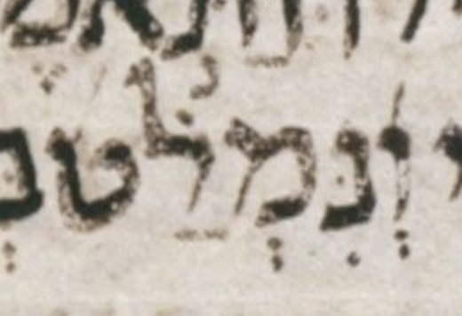

This document presents some quirks in μL in the book of Job.
The header of each entry below takes the following form:
| # | μL consensus |
c:v | how μL differs from consensus |
Where:
| # | וְתֹ֖פֶתּ וְתֹ֖פֶת |
17:6 | final ת has דגש |
UXLC — MwD — LC page 402A col. 1 line 7 — A דגש in a final ת doesn’t make sense without a קמץ or a שווא נח below. But the dot is convincing. — BHQ catches this, whereas this is not noted in BHL-A or Da-at Miqra.

| # | לְבָבִּֽי׃ לְבָבִֽי׃ |
17:11 | second ב has דגש |
UXLC — MwD — LC page 402A col. 1 line 13 — BHQ catches this, whereas this is not noted in BHL-A or Da-at Miqra.

| # | בְּעָּקֵ֣ב (?) בְּעָקֵ֣ב |
18:9 | ע may have דגש |
UXLC — MwD — LC page 402A col. 2 line 2 — A דגש in a ע doesn’t make sense. But the dot is convincing, despite being a little close to the right arm of the ע. — BHQ catches this possibility, whereas this is not noted in BHL-A or Da-at Miqra. It could be that Dotan and Breuer did not catch this, or it could be that they caught it but considered to be too slight a possibility to note it.

| # | וְ֝נִּמְלַ֗ט (?) וְ֝נִמְלַ֗ט |
22:30 | נ may have דגש |
UXLC — MwD — LC page 403B col. 2 line 4 — The dot in question is suspiciously smaller than nearby ones. — BHQ catches this possibility, whereas this is not noted in BHL-A or Da-at Miqra. It could be that Dotan and Breuer did not catch this, or it could be that they caught it but considered to be too slight a possibility to note it.
| # | יָ֥דְּֿעוּ (?) יָ֥דְעוּ |
24:16 | דגש may fight with רפה |
UXLC — MwD — LC page 404A col. 1 line -12 (12 counting from bottom of column) — A דגש on a letter with רפה doesn’t make sense. The dot in question is suspiciously larger than nearby ones, and looks different from them in other ways. — BHQ catches this possibility, whereas this is not noted in BHL-A or Da-at Miqra. It could be that Dotan and Breuer did not catch this, or it could be that they caught it but considered to be too slight a possibility to note it.

| # | כִּבְלִי־ בִּבְלִי־ |
36:12 | כ not ב |
UXLC — MwD — LC page 407B col. 1 line 4 — Although my focus is pointing rather than spelling, I am interested in a spelling difference like this, since it is not just a חסר vs מלא difference. — BHQ catches this, whereas this is not noted in BHL-A. It could be that Dotan did not catch this, or it could be that he caught it but considered to be too slight a possibility to note it. It is noted in Da-at Miqra. Here BHQ has a typo: it has בִּבְלִ־ rather than בִּבְלִי־ in the word it reports for μA and μL. I.e. it is missing a final yod (י) before the מקף. The same typo appears in the BHQ section “Commentary on the Critical Apparatus.” In addition to the typo, for some reason BHQ reports this word as being the qere of μA, i.e. MY(qere) rather than just MY.

μA (Aleppo):

μY (Cambridge 1753):

| # | צַלְמָּ֣וֶת צַלְמָ֣וֶת |
38:17 | מ has דגש |
UXLC — MwD — LC page 408A col. 1 line -5 (5 counting from bottom of column) — BHQ catches this, whereas this is not noted in BHL-A or Da-at Miqra.

| # | בָנֽוֹת׃ בָּנֽוֹת׃ |
42:13 | ב lacks דגש |
UXLC — MwD — LC page 409B col. 1 line -9 (9 counting from bottom of column) (including 1 blank line in the count) — BHQ catches this, whereas this is not noted in BHL-A or Da-at Miqra.

| # | שָׁ֔מָה שָׁ֔מָּה |
1:21 | מ lacks דגש |
UXLC — MwD — LC page 397B col. 1 line 1 — BHQ notes that here μL disagrees with μA and μY, which have the consensus pointing. — μL is from BHL-A.

| # | אֱל֣וֹהַ אֱל֣וֹהַּ |
4:9 | ה has no מפיק |
UXLC — MwD — LC page 398A col. 1 line -2 (2 counting from bottom of column) — This is one of seven similar cases in Job in μL. Six of these seven, including this one, are noted in the entry for 4:9 in the BHQ section “Commentary on the Critical Apparatus.” Only this one and 11:6 are noted in the bottom-of-page critical apparatus as well. — μL is from BHL-A.

| # | מֵאֱל֣וֹהַ מֵאֱל֣וֹהַּ |
4:17 | ה has no מפיק |
UXLC — MwD — LC page 398A col. 2 line 10 — This is one of seven similar cases in Job in μL. This is the only one of these seven not noted by BHQ. 4:9 discusses the matter at greater length. — μL is from BHL-A.

| # | וְכִימֵ֖֗י וְכִימֵ֖י |
7:1 | רביע fights טרחא |
UXLC — MwD — LC page 399A col. 1 line 4 — BHQ silently ignores the possible רביע. — μL is from BHL-A.

| # | יַעֲלֽ͏ֶה׃ יַעֲלֶֽה׃ |
7:9 | סילוק precedes סגול |
UXLC — MwD — LC page 399A col. 1 line 14 — BHQ agrees with μL here, but BHQ makes no note of μL’s divergence from consensus. — μL is from BHL-A.

| # | וְשִׁ֖חֲרְתַּ֣נִי וְשִׁ֖חַרְתַּ֣נִי |
7:21 | פתח on ח is חטף |
UXLC — MwD — LC page 399A col. 2 line 3 — BHQ agrees with μL here, but BHQ makes no note of μL’s divergence from consensus. — μL is from BHL-A.

| # | וַיֹאמַֽר׃ וַיֹּאמַֽר׃ |
8:1 | yod (י) lacks דגש |
UXLC — MwD — LC page 399A col. 2 line 5 (including 1 blank line in the count) — This is noted in the bottom-of-page critical apparatus of BHQ. — μL is from BHL-A.

| # | וְּ֝אַחֲרִיתְךָ֗ וְ֝אַחֲרִֽיתְךָ֗ |
8:7 | שורוק dot fights שווא |
UXLC — MwD — LC page 399A col. 2 line 13 (including 1 blank line in the count) — The געיה difference is not important to us here. — BHQ silently ignores the possible שורוק dot. — μL is from BHL-A.

| # | עִמּוֹ׃ (?) עִמּֽוֹ׃ |
9:14 | סילוק may be missing |
UXLC — MwD — LC page 399B col. 1 line 22 (including 1 blank line in the count) — BHQ silently supplies the סילוק that is the consensus expectation, despite little or no evidence for it in μL. — μL is from BHL-A.

| # | כַּפָּי׃ (?) כַּפָּֽי׃ |
9:30 | סילוק may be missing |
UXLC — MwD — LC page 399B col. 2 line 15 — BHQ silently supplies the סילוק that is the consensus expectation, despite little or no evidence for it in μL. — μL is from BHL-A.

| # | אַֽ֭דַבְּרָה אֲֽ֭דַבְּרָה |
9:35 | פתח on א is not חטף |
UXLC — MwD — LC page 399B col. 2 line -8 (8 counting from bottom of column) — BHQ agrees with μL here, but BHQ makes no note of μL’s divergence from consensus. — μL is from BHL-A.

| # | אֲ֝דַבְּרָה֗ אֲ֝דַבְּרָ֗ה |
10:1 | רביע is on ה not ר |
UXLC — MwD — LC page 399B col. 2 line -6 (6 counting from bottom of column) — BHQ agrees with μL here, but BHQ makes no note of μL’s divergence from consensus. — μL is from BHL-A.

| # | עָנְיֽ͏ִי׃ עׇנְיִֽי׃ |
10:15 | סילוק precedes חיריק |
UXLC — MwD — LC page 400A col. 1 line 14 — BHQ agrees with μL here, but BHQ makes no note of μL’s divergence from consensus. — μL is from BHL-A.

| # | יַחֲרִ֑ישׁו יַחֲרִ֑ישׁוּ |
11:3 | שורוק dot is missing |
UXLC — MwD — LC page 400A col. 1 line -1 (1 counting from bottom of column) — BHQ agrees with μL here, but BHQ makes no note of μL’s divergence from consensus. — μL is from BHL-A.

| # | אֱ֝ל֗וֹהַ אֱ֝ל֗וֹהַּ |
11:6 | ה has no מפיק |
UXLC — MwD — LC page 400A col. 2 line 5 — This is one of seven similar cases in Job in μL. 4:9 discusses the matter at greater length. — μL is from BHL-A.

| # | אֱל֣וֹהַ אֱל֣וֹהַּ |
11:7 | ה has no מפיק |
UXLC — MwD — LC page 400A col. 2 line 6 — This is one of seven similar cases in Job in μL. 4:9 discusses the matter at greater length. — μL is from BHL-A.

| # | וְאֶת_ וְאֶת־ |
12:3 | מקף is missing |
UXLC — MwD — LC page 400A col. 2 line -1 (1 counting from bottom of column) — BHQ silently supplies the מקף that is the consensus expectation, despite no evidence for it in μL. — μL is from BHL-A.

| # | מֵרֵ֣יַּח מֵרֵ֣יחַ |
14:9 | yod (י) has דגש |
UXLC — MwD — LC page 401A col. 1 line -9 (9 counting from bottom of column) — BHQ silently ignores the possible דגש. — μL is from BHL-A.

| # | אֱל֣וֹהַ אֱל֣וֹהַּ |
15:8 | ה has no מפיק |
UXLC — MwD — LC page 401A col. 2 line -7 (7 counting from bottom of column) — This is one of seven similar cases in Job in μL. 4:9 discusses the matter at greater length. — μL is from BHL-A.

| # | שֹֽׁ֥חַד׃ שֹֽׁחַד׃ |
15:34 | מרכא fights סילוק |
UXLC — MwD — LC page 401B col. 1 line -3 (3 counting from bottom of column) — BHQ silently ignores the possible מרכא. — μL is from BHL-A.

| # | ל֤וּ־ ל֤וּ_ |
16:4 | מקף is present |
UXLC — MwD — LC page 401B col. 2 line 3 — Though it is not relevant to the point at hand, which is the presence of a מקף, note that in μL, the shape we take to be מחפך is touching the bottom of the ל (lamed). — Though it is not relevant to the point at hand, note that BHQ continues to fail to distinguish between גלגל and אתנח הפוך. — μL is from BHL-A.

| # | מְרֵרָֽתִי׃ מְרֵרָתִֽי׃ |
16:13 | סילוק is on 2nd ר not ת |
UXLC — MwD — LC page 401B col. 2 line -10 (10 counting from bottom of column) — BHQ agrees with μL here, but BHQ makes no note of μL’s divergence from consensus. — μL is from BHL-A.

| # | אֱ֝ל֗וֹהַ אֱ֝ל֗וֹהַּ |
16:20 | ה has no מפיק |
UXLC — MwD — LC page 401B col. 2 line -2 (2 counting from bottom of column) — This is one of seven similar cases in Job in μL. 4:9 discusses the matter at greater length. — μL is from BHL-A.

| # | הֲ֭לְמַּעַנְךָ הַֽ֭לְמַעַנְךָ |
18:4 | פתח on ה is חטף and מ has דגש. |
BHQ: הַ֭לְמַּעַנְךָ
UXLC — MwD — LC page 402A col. 1 line -4 (4 counting from bottom of column) — The געיה difference is not important to us here. — BHQ silently ignores the possible שווא part of the possible חטף פתח. It also silently ignores the possible intepretation of that ink as a געיה. I.e. other than the prepositive דחי accent, BHQ supplies only the (full) פתח that is the consensus expectation here. BHQ does so silently, i.e. with no note about the pointing of ה. BHQ does note that the דגש on the מ in μL disagrees with μA and μY. BHQ misses the געיה in μA. This געיה is irrelevant to BHQ’s point here, which is only about the דגש. Still, it is sloppy to have missed it. — μL is from BHL-A.

μA (Aleppo):

| # | א֖וֹר א֭וֹר |
18:6 | דחי is placed like a טרחא |
UXLC — MwD — LC page 402A col. 1 line -2 (2 counting from bottom of column) — BHQ positions the mark ambiguously. The mark is a little to the right of center. So it is not centered, as one would expect a טרחא to be, but neither is it as far to the right as דחי normally is in BHQ. — μL is from BHL-A.

| # | חֶרְפָּתִּֽֿי (?) חֶרְפָּתִֽי׃ |
19:5 | דגש may fight with רפה |
UXLC — MwD — LC page 402A col. 2 line -5 (5 counting from bottom of column) — A דגש on a letter with רפה doesn’t make sense. Color photos show דגש to be unlikely. — BHQ silently lets the faint possible דגש “win” over the clear רפה in μL. — μL is from BHL-A.

| # | קָּ֭רָאתִי (?) קָ֭רָאתִי |
19:16 | ק may have דגש |
UXLC — MwD — LC page 402B col. 1 line 8 — The dot is suspiciously brown rather than black. — BHQ notes that the דגש on the ק in μL disagrees with μA and μY. — μL is from BHL-A.

| # | וִלֹֽא־ וְלֹֽא־ |
21:25 | ו has חיריק not שווא |
UXLC — MwD — LC page 403A col. 2 line 13 — The dot is suspiciously brown rather than black, making me wonder whether the ו was pointed at all. — BHQ silently supplies the שווא that is the consensus expectation, despite little or no evidence for it in μL. — μL is from BHL-A.

| # | עִמּ֑וֹ
וּשְׁלם (?) עִמּ֣וֹ וּשְׁלָ֑ם |
22:21 | אתנח and ∅ not מונח and קמץ־אתנח? |
UXLC — MwD — LC page 403B col. 1 line -6 (6 counting from bottom of column) — BHL Appendix A fails to note the anomalous non-pointing of the ל in the next word, ושלם. Nonethless I have included ושלם above. The letters of both words are re-inked, and as usual, the re-inking is sloppy. Perhaps some super-faint remains of an אתנח under ל can be seen. The top dot of the שווא (under the ש) is super-faint. I (charitably) transcribed it based on consensus expectations. A dot under the מ of עמו is fairly clear. It is (charitably) not transcribed by BHL, presumably based on consensus expectations. — BHQ transcribes these words as shown above. I.e. BHQ transcribes עמו as BHL does, and BHQ transcribes ושלם as I do. BHQ notes that whereas the ל of ושלם is unpointed in μL, that ל has קמץ and אתנח in μA and μY. BHQ fails to note that, relatedly, the אתנח it transcribes on עמו disagrees with μA and μY. In summary, BHL only notes a מונח vs אתנח issue on עמו and BHQ only notes a lack of קמץ־אתנח on ושלם. Therefore both editions not only miss some issues but also miss the relationship between the אתנח issues. — μL is from BHL-A.

μA (Aleppo):

μY (Cambridge 1753) (note that instead of a masorah circle, μY uses a pair of above-dots as a “callout” for a Masorah parva note; hence the pair of above-dots above ל in ושלם.):

| # | א֖וֹמֶר אֹ֭מֶר |
22:28 | דחי is placed like a טרחא |
UXLC — MwD — LC page 403B col. 2 line 2 — The מלא/חסר spelling difference is not important to us here. — BHQ places the mark a little left of center. Though this placement is odd, this makes it clear that a טרחא was intended rather than a דחי. — μL is from BHL-A.

| # | רֹעֵ֣ה (?) רֹעֶ֣ה |
24:21 | ע may have צירה not סגול |
UXLC — MwD — LC page 404A col. 2 line -2 (2 counting from bottom of column) — Perhaps there is some super-faint evidence of a third dot that would make a סגול, but this could be just wishful thinking. Note that there is a third dot above the two clearer dots, but I take that to be part of the ע that did not flake off like its neighboring ink did. — BHQ silently supplies the סגול that is the consensus expectation. I.e. despite little or no evidence for it in μL, BHQ silently infers a third dot centered below the two clearer dots. — μL is from BHL-A.

| # | חַי_ חַי־ |
27:2 | מקף is missing |
UXLC — MwD — LC page 404A col. 2 line -2 (2 counting from bottom of column) — Perhaps there is some super-faint evidence of a מקף that was ignored during re-inking. By the way, the evidence for the דחי on the א of the next word is super-faint. — BHQ silently supplies the מקף that is the consensus expectation, despite little or no evidence for it in μL. — μL is from BHL-A.

| # | הִדְריכֻ֥הוּ הִדְרִיכ֥וּהוּ |
28:8 | חיריק is missing |
UXLC — MwD — LC page 404B col. 2 line 5 — The מלא/חסר spelling difference is not important to us here. — BHQ silently supplies the חיריק that is the consensus expectation, despite no evidence for it in μL. — μL is from BHL-A.

| # | וְעַ֥ין וְעַ֥יִן |
29:11 | חיריק is missing |
UXLC — MwD — LC page 405A col. 1 line -12 (12 counting from bottom of column) — BHQ silently supplies the חיריק that is the consensus expectation, despite no evidence for it in μL. — μL is from BHL-A.

| # | בִּקְצִירֽ͏ִי׃ בִּקְצִירִֽי׃ |
29:19 | סילוק precedes חיריק |
UXLC — MwD — LC page 405A col. 1 line -4 (4 counting from bottom of column) — Probably the ascender of the ל on the line below “forced” the סילוק to be early. — BHQ agrees with μL here, but BHQ makes no note of μL’s divergence from consensus. — μL is from BHL-A.

| # | רַגְלֽ͏ִי׃ רַגְלִֽי׃ |
31:5 | סילוק precedes חיריק |
UXLC — MwD — LC page 405B col. 1 line -9 (9 counting from bottom of column) (including 1 blank line in the count) — BHQ silently supplies the marks in the vowel-then-accent order that is the consensus expectation, in clear contradiction of μL here. 32:6 is similar. In my opinion BHQ shows itself to be out of date by continuing to aspire, as BHS did, to reflect all such ordering quirks. I think the modern consensus is that these orderings are as meaningless as the variable length of ascenders on ל. Nonetheless, since BHQ still aspires to get these orderings right, it is fair for me to point out when it fails to do so. — μL is from BHL-A.

| # | מֻאֿוּֽם׃ מֽאֿוּם׃ |
31:7 | קבוץ and סילוק not סילוק and ∅ |
BHQ: מֻאֽוּם׃
UXLC — MwD — LC page 405B col. 1 line -6 (6 counting from bottom of column) (including 1 blank line in the count) — BHQ reflects neither μL nor the consensus expectation here. It reflects μL except it places the סילוק under the א. This not only contradicts μL, but also makes no sense given the רפה on the א. One might argue that this רפה should have been shown, despite the general policy of BHQ to ignore רפה marks in μL. Regardless of whether the רפה should have been shown, its presence in μL should have excluded the possibility of a סילוק under its letter (א)! BHQ notes that here μL disagrees with μA and μY, which have the consensus pointing. — μL is from BHL-A.

| # | עֲוֺֽנִי׃ עֲוֺנִֽי׃ |
31:33 | סילוק is on ו not נ |
UXLC — MwD — LC page 405B col. 2 line -3 (3 counting from bottom of column) — BHQ agrees with μL here, but BHQ makes no note of μL’s divergence from consensus. — μL is from BHL-A.

| # | יְשִׁישִׁ֑ים יְשִׁישִׁ֑ים |
32:6 | אתנח precedes חיריק |
UXLC — MwD — LC page 406A col. 1 line -6 (6 counting from bottom of column) — BHQ silently supplies the marks in the vowel-then-accent order that is the consensus expectation, in clear contradiction of μL here.31:5 is similar and discusses the matter at greater length. — μL is from BHL-A.

| # | אֱ֝ל֗וֹהַ אֱ֝ל֗וֹהַּ |
33:12 | ה has no מפיק |
UXLC — MwD — LC page 406B col. 1 line 2 — This is one of seven similar cases in Job in μL. 4:9 discusses the matter at greater length. — μL is from BHL-A.

| # | הַֽחַיִּים׃ הַחַיִּֽים׃ |
33:30 | סילוק is on syl. 1 not 3 |
UXLC — MwD — LC page 406B col. 1 line -1 (1 counting from bottom of column) — BHQ notes that here μL disagrees with μA and μY, which have the consensus pointing. — μL is from BHL-A.

| # | נִּכַּר־ נִכַּר־ |
34:19 | נ has דגש |
UXLC — MwD — LC page 406B col. 2 line -2 (2 counting from bottom of column) — The possible דגש is faint, especially compared with the adjacent דגש on כ. — BHQ silently ignores the faint possible דגש. Or it ignores the μL entirely and simply supplies the consensus pointing here, which has no דגש. It is hard to distinguish whether BHQ has done the right thing here by accident or on purpose. — μL is from BHL-A.

| # | סֻכָּֽתֽוֹ׃ סֻכָּתֽוֹ׃ |
36:29 | כ has געיה |
UXLC — MwD — LC page 407B col. 1 line -5 (5 counting from bottom of column) — The color image strongly suggests that the mark in question is not ink. A געיה right next to סילוק like that would be extraordinary, BTW, though I feel no appeal to expectations is needed to dismiss this possible געיה. — BHQ silently ignores the faint possible large געיה. Or it ignores the μL entirely and simply supplies the consensus pointing here, which has no געיה. It is hard to distinguish whether BHQ has done the right thing here by accident or on purpose. — μL is from BHL-A.

| # | לַשֶּׁ֨לַג׀ לַשֶּׁ֨לֶג׀ |
37:6 | 2nd ל has פתח not סגול |
UXLC — MwD — LC page 407B col. 2 line 7 — BHQ agrees with μL here, but BHQ makes no note of μL’s divergence from consensus. — μL is from BHL-A.

| # | הְֽ֭מִיָּמֶיךָ הֲֽ֭מִיָּמֶיךָ |
38:12 | simple שווא not חטף פתח |
UXLC — MwD — LC page 408A col. 1 line -12 (12 counting from bottom of column) — 39:20 is similar — BHQ notes that here μL disagrees with μA and μY, which have the consensus pointing. — μL is from BHL-A.

| # | וְ֝יָדַעְתָּ֜ וְ֝יָדַעְתָּ֗ |
39:2 | גרש not רביע |
UXLC — MwD — LC page 408A col. 2 line -3 (3 counting from bottom of column) — The mark in question is very heavy, having a stroke width more typical of a letter-stroke than of a niqqud-stroke. Its clarity suggests it is part of the re-inking. Indeed perhaps it is only part of the re-inking, i.e. perhaps it reflects no mark (or only a much smaller mark) in the original. The mark in question may be two marks, a רביע (expected) overlaid with a גרש (unexpected). Or, it may be only a single mark whose lower end is, for some reason, a blob. — BHQ silently supplies the רביע that is the consensus expectation. — μL is from BHL-A.

| # | מְלֵֽחָה׃ מְלֵחָֽה׃ |
39:6 | סילוק is on ל not ח |
UXLC — MwD — LC page 408B col. 1 line 3 — BHQ agrees with μL here, but BHQ makes no note of μL’s divergence from consensus. — μL is from BHL-A.

| # | אֶ֝בְרָה (?) אֶ֝בְרָ֗ה |
39:13 | רביע מגרש may lack רביע |
UXLC — MwD — LC page 408B col. 1 line 11 — A more charitable interpretation of the image is that the רביע is present but is merged with the masorah circle. (It is fairly clear that a masorah circle is present.) Note that the vertical line above the ר is a סילוק from the line above. — BHQ seems to split the mark(s) in question into a רביע on ר and a masorah circle on ב. — μL is from BHL-A.

| # | הְֽ֭תַרְעִישֶׁנּוּ הֲֽ֭תַרְעִישֶׁנּוּ |
39:20 | simple שווא not חטף פתח |
UXLC — MwD — LC page 408B col. 1 line -10 (10 counting from bottom of column) — 38:12 is similar — BHQ agrees with μL here, but BHQ makes no note of μL’s divergence from consensus. — μL is from BHL-A.

| # | גָֽא֣וֹן (?) גָא֣וֹן |
40:10 | געיה may be present (on ג) |
UXLC — MwD — LC page 408B col. 2 line -11 (11 counting from bottom of column) — The mark in question could easily be accidental. — BHQ agrees with μL here, but BHQ makes no note of μL’s divergence from consensus. — μL is from BHL-A.

| # | לֶֽחֱיוֹ׃ לֶחֱיֽוֹ׃ |
40:26 | סילוק on ל not yod (י) |
UXLC — MwD — LC page 409A col. 1 line 8 — BHQ agrees with μL here, but BHQ makes no note of μL’s divergence from consensus. — μL is from BHL-A.

| # | לִבְלִי־חָת׃ לִבְלִי־חָֽת׃ |
41:25 | סילוק missing |
UXLC — MwD — LC page 409A col. 2 line 14 — BHQ silently supplies the סילוק that is the consensus expectation, despite no evidence for it in μL. — μL is from BHL-A.

{kind=link}
{kind=link}
{kind=link}
{kind=link}
{kind=link}
{kind=link}
{kind=link}
{kind=link}
{kind=link}
{kind=link}
{kind=link}
{kind=link}
{kind=link}
{kind=link}
{kind=link}
{kind=link}
{kind=link}
{kind=link}
{kind=link}
{kind=link}
{kind=link}
{kind=link}